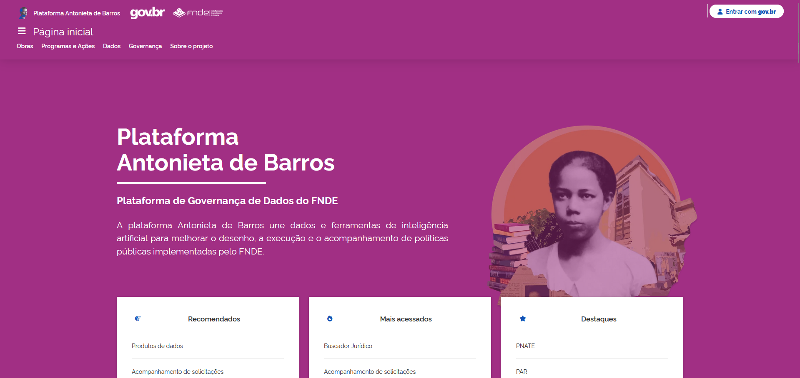
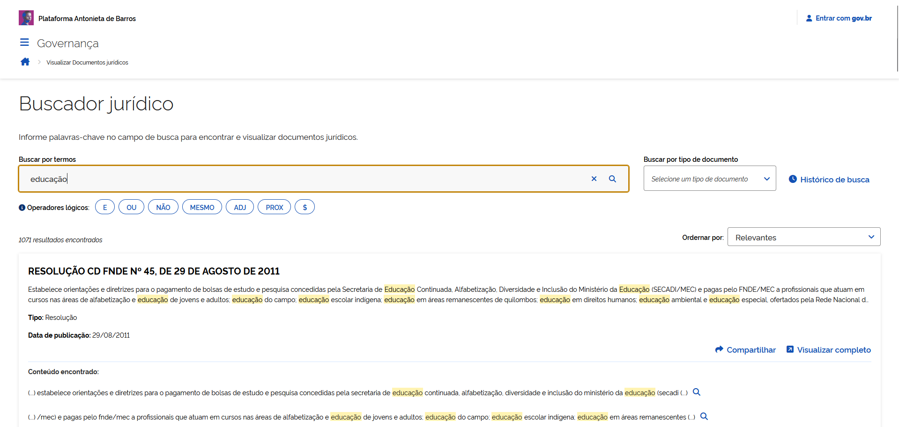
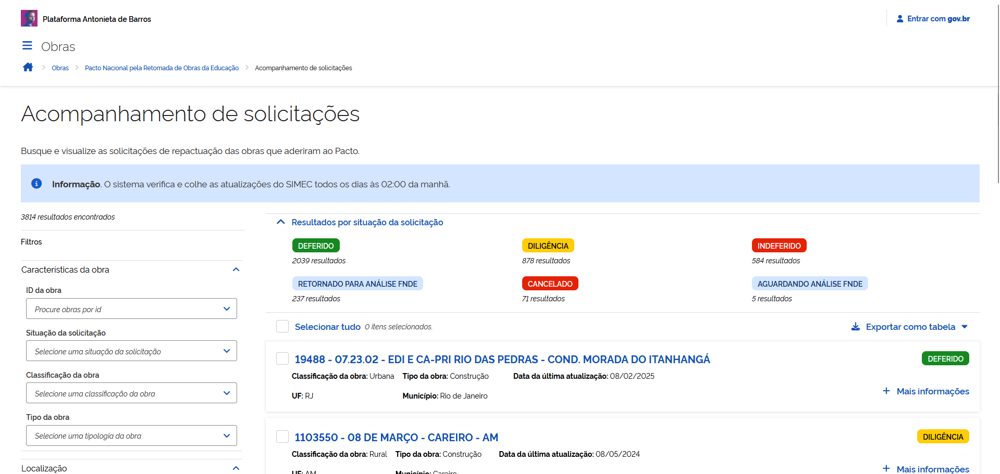
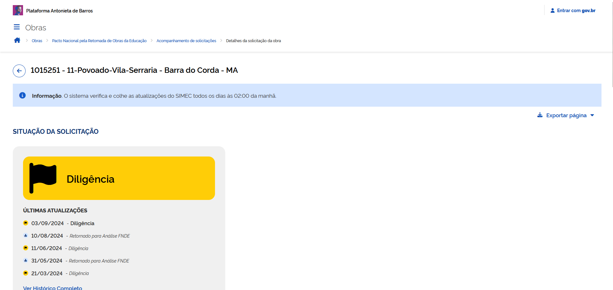

An e-Gov solution for integrating diverse government education systems
This project was developed with the dual purpose of serving as an operational tool for FNDE employees, facilitating their daily tasks and decision-making processes, while also acting as a transparency instrument for society by providing clear, accessible, and up-to-date information about the status and progress of educational construction projects that are currently stalled or paralyzed.
  I contributed to the design of the platform, conducted usability evaluations — including heuristic analysis and user surveys — in collaboration with my team, and participated in research on e-government and user experience. I also collaborated in the writing of academic articles about the platform and its development.
Visit the website at: https://www.fnde.gov.br/plataforma-antonieta-de-barros